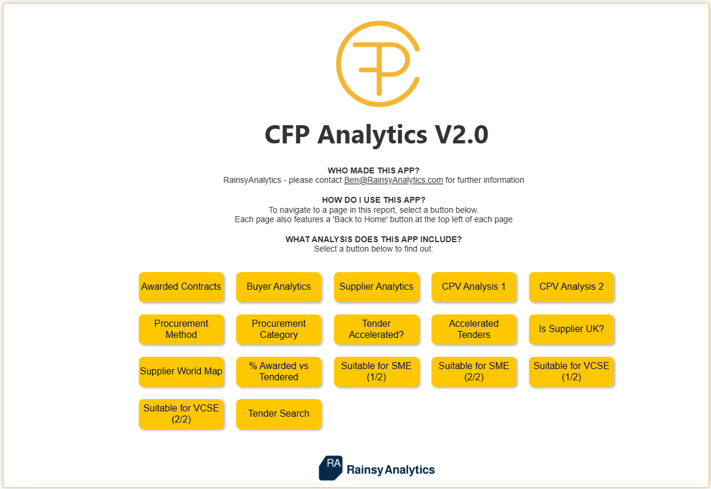
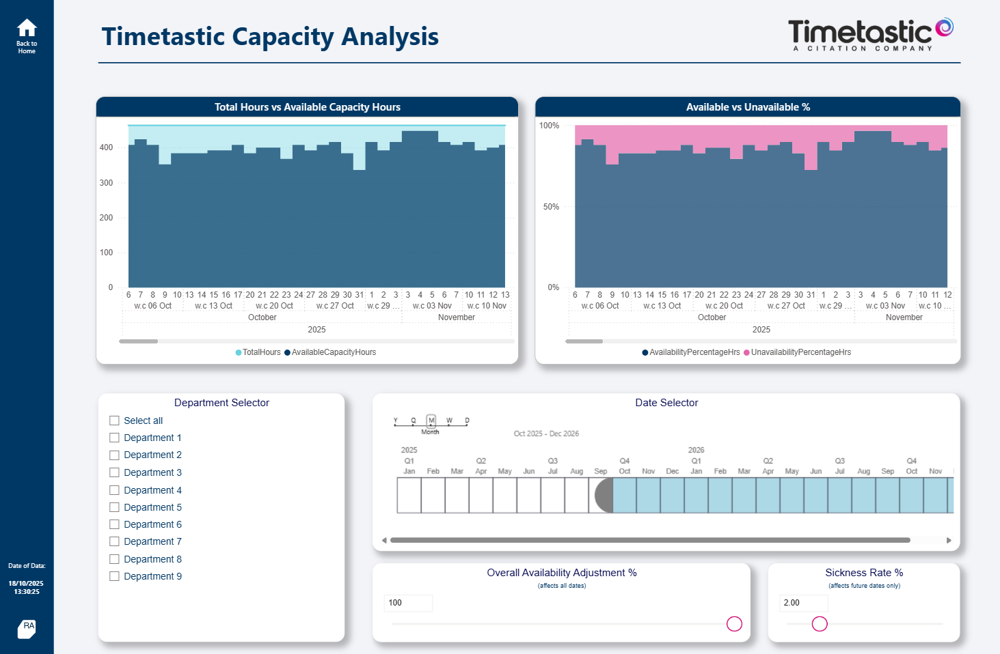
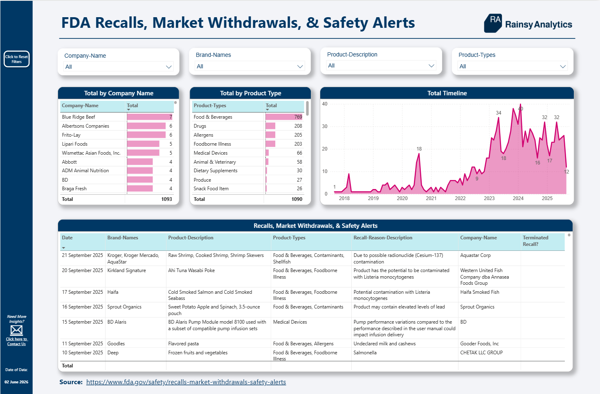
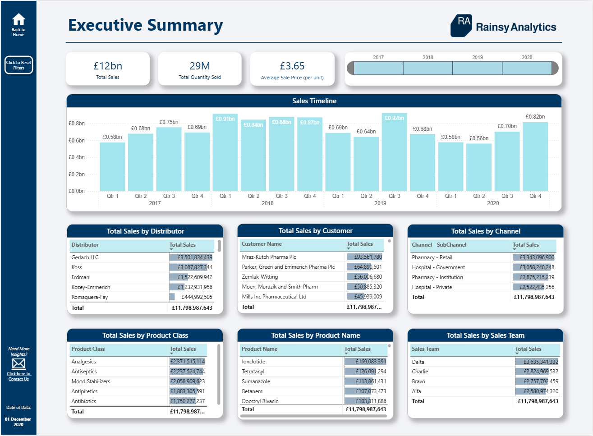

Capacity Intelligence System
For teams that need to understand demand, availability, allocation, utilisation and future resource risk.
Rainsy Analytics helps operations teams replace fragmented reporting with decision-ready analytics systems for resource planning, manufacturing performance and portfolio delivery.

Most operational teams already have data. The challenge is that the numbers are scattered across planning tools, ERP exports, timecards, trackers and spreadsheets.
Built around recurring operational problems, not one-off report requests.
For teams that need to understand demand, availability, allocation, utilisation and future resource risk.
For operations teams that need clearer visibility of output, workload, bottlenecks, downtime and financial impact.
For project and portfolio teams that need to connect intake, prioritisation, staffing and delivery performance.
Current showcase areas focus on the operational problems where analytics creates measurable business value.
Demand vs capacity, resource allocation, forecasting, utilisation, workload gaps and executive-level delivery risk.

Production workload, OEE-style performance, downtime, bottleneck identification, engineering stores and output trends.

Project intake, prioritisation, portfolio demand, resource forecasting, delivery risk and stakeholder visibility.

Planned workload compared against actual time recorded, capacity assumptions, utilisation and operational pressure.
Rainsy Analytics is built for operational teams that need a repeatable analytics layer, not another disconnected dashboard.
Clarify the operating problem, decision points, stakeholders, data sources and current reporting pain.
Design the data model, metric definitions, business logic and reporting structure around the real process.
Create practical Power BI reporting with clear navigation, executive views and operational drill-through.
Turn the report into a reliable management system with refresh, governance, ownership and improvement cycles.
Recommended starting point: a free 30-minute fit call, followed by a paid diagnostic sprint where the reporting process, data sources and business case are mapped properly.